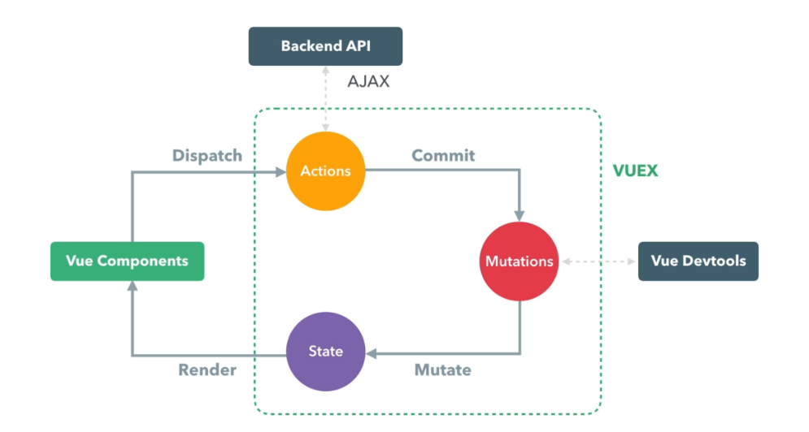

Vuex 是什麼 ?
Vuex 是用來管理前端網站的資料狀態，適用於規模較大的網站，如果網站規模不夠大，反而是多了限制
以往的資料傳遞方式
以往的資料傳遞方式分別是透過以下方法來達成
emit: 內層元件傳遞至外層元件props: 外層元件傳遞至內層元件$eventbus: 同層元件或跨層元件間的傳遞，但僅適用於資料量較小的情況，如果資料量過大，容易造成管理上的混亂全域變數: 無法發揮 Vue 雙向綁定的特色
Vuex 的特色
將所有資料和方法都拉進來統一管理，每個階層的元件都可以呼叫 Vuex 內的方法，並維持 Vue 雙向綁定的特性，而存在於其中的方法稱為 store
Vuex 的方法
Vuex 的方法都有其相對的元件方法，但又不完全相同
| 元件方法 | Vuex 方法 | 功能 |
|---|---|---|
| data | state | 管理資料的位置與資料的狀態 |
| methods | action | 處理非同步的事件或取得遠端的資料，但不處理資料的狀態 |
| computed | getter | 在資料呈現於畫面前過濾或是進行運算 |
| mutation | 改變資料內容的方法 |
Vuex 流程
- 首先透過
Dispatch這個方法來觸發Actions事件 - 接著
Actions就會取得遠端的資料或處理非同步的行為，但並不會改變資料的狀態 - 再來
Actions會透過Commit這個方法來呼叫Mutations，並透過Mutations來改變資料的狀態 - 最後回傳給
Vue元件來做畫面的繪製，其中Mutations與開法者工具Vue Devtools有很大的關係，所以在Mutations不會再取得資料，而在Actinos不會改變資料內容
